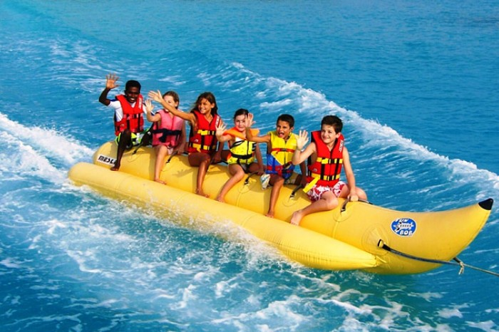
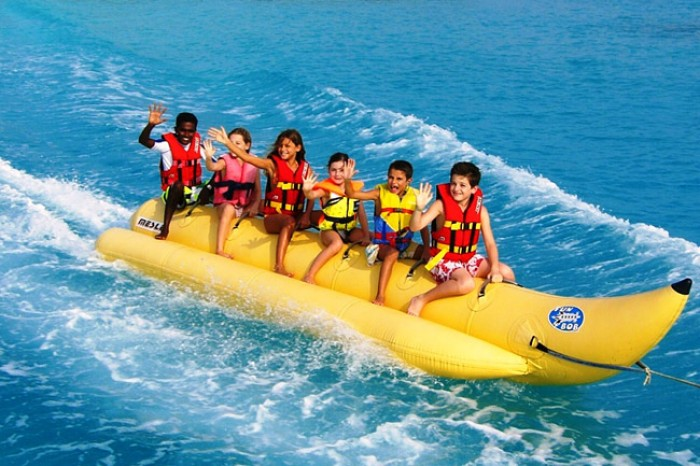
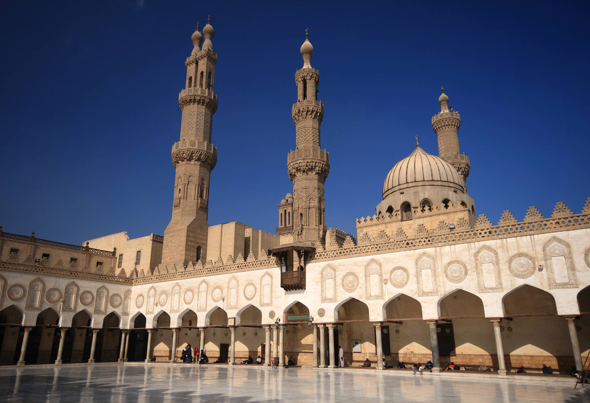
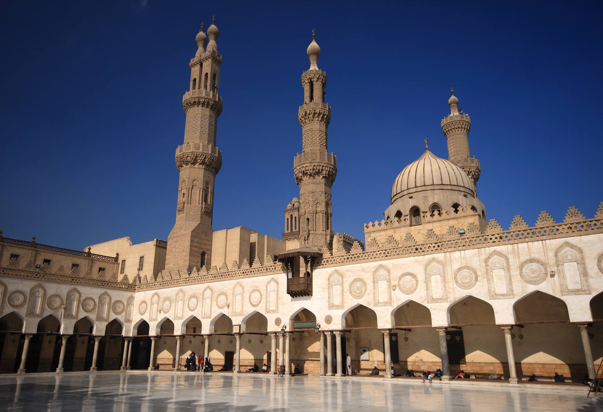
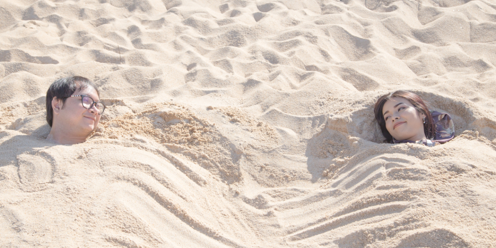
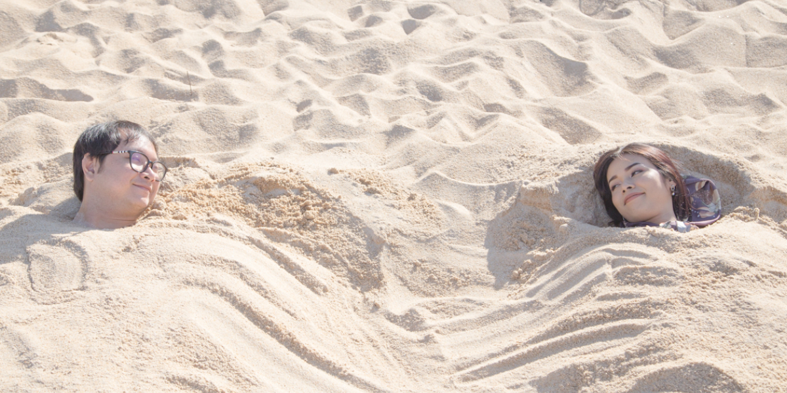
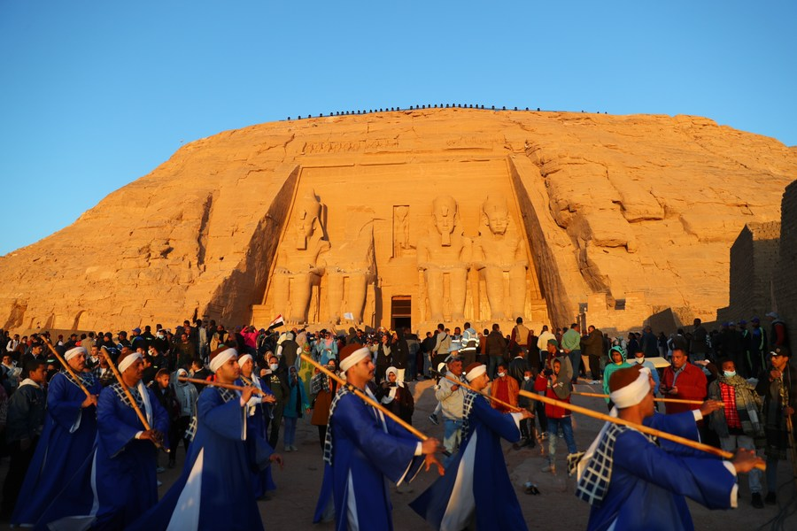
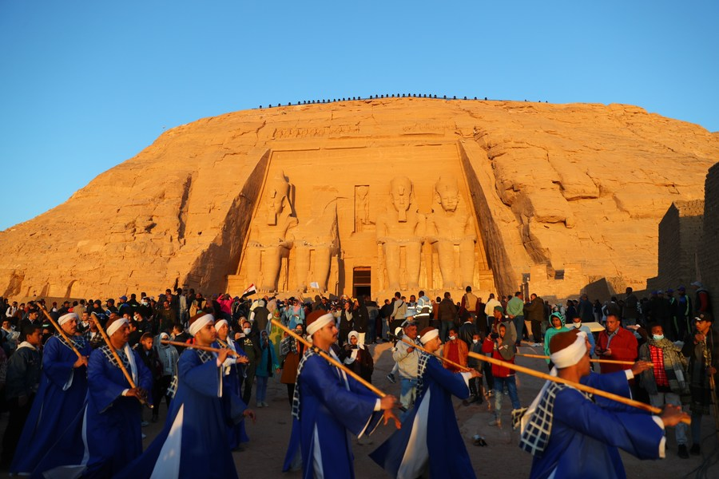

This is the main type of tourism that has been found in Egypt since the discovery of the incredible attractions of ancient Egypt. Through Cultural tourism, every traveler will get to discover all the historical and the way of life of the ancient Egyptians

Leisure Tourism . Tourists really love to come to Egypt to enjoy a recreational tour while being in the tourist beaches in the incredible coastal beaches of Hurghada, Marsa Alam, Dahab, El-Gouna, Sharm El-Sheikh, Safaga, Al-Ein El-Sukhna, Ras Sudr, and lots of other exquisite sites with amazing beaches and breathtaking services to be offered to tourists .


Religious Tourism . Egypt is a divine destination that made an impact across all the three great holy religions of the world. It offers every traveler the road to divinity, bliss, and unity..


Medical Tourism . Egypt has always been known to have mystical and healing powers across its heavenly waters and divine lands. The best and the most notable thing about Egypt is its mineral water that is free from moisture and it is the best to treat many diseases including bone and skin diseases, gastrointestinal tract, and lots of other diseases that can simply be cured just by staying in the sand .


Festival Tourism. Festivals are one of the most important means of tourist attractions. As it increases Egypt revenues. Egypt has organized a numerous exhibitions and festivals which have a mass turnout. The most important of these are:
the Cairo International Book Fair, Opera Aida, Cairo International Festival of Popular Song, the Cairo International Film Festival, Tourism and Shopping Festival, the International Festival of Documentary Film, Ismailia Festival of Folk Art, the International Festival of Theater, Alexandria International Film Festival, Festival in fulfillment of the Nile, Tourism International day Festival, the sun falls perpendicular to the temple of Abu Simbel Festival, the annual celebration of the Discovery of Tutankhamen tomb in Luxor.

